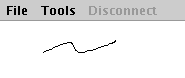

Introduction
NetDraw is a small application that allows an unlimited number of people
to draw on the same virtual paper. Everyone can join the network and
see what other people are drawing.
Purpose
Explaining things in words can sometimes be a real pain and a picture
says more then thousand words. But starting a paint program, draw a
sketch, upload it somewhere where other people can download and view
it seemed to be too much work for a quick and dirty drawing that will
be discarded after the other people have seen it. So the idea to have
an application that allows other people to see directly what you are
drawing was born. The result of the development is NetDraw. NetDraw does
not only allow other people to see you drawing, but everyone can draw
on the same paper. So if you make a sketch and someone has an idea how
it could be modified he can make some changes to it too.
Usage
|  |
How it works
Whatever you draw is transmitted to the connected peers and the NetDraw
there will perform the same operation. Operations that are received from
one peer will be retransmitted to the other peers that are connected.
NetDraw only transmits the drawing operations and never the whole
drawing. So if a peers joins the network after something has been drawn
it will only see the things that are drawn after the peer joined. The
peer can even have a totally different drawing before it joins. So you
probably should clear the drawing from time to time and start over with
a clear page for all clients from time to time.
Running NetDraw
NetDraw is a Java application to you need a Java Runtime Environment (JRE) or Software Development Kit to (SDK) run it.
With an installed JRE/SDK you can run the NetDraw.jar file. On Windows you can do this from the explorer with a doubleclick.
On other plattforms you can run it from the commandline with
| java -jar NetDraw.jar |
Downloads
| NetDraw | NetDraw 1.0 |
| Java JRE/SDK | Sun's Java Pages |